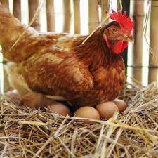

Once you have your eggs - you need to decide if you are going to incubate them underneath a chicken or using an artificial incubator. To incubate an egg naturally, you will need to have a hen which is prepared to sit on the eggs for a full three weeks. This is called a “broody” or “sitting” hen. The eggs in the nesting box is called a “clutch” or “setting”. If a hen was doing this without human intervention, it would generally go broody when it has built up around a dozen eggs. If you have a large number of eggs or are incubating the eggs to sell then it might be worth considering using an incubator.
